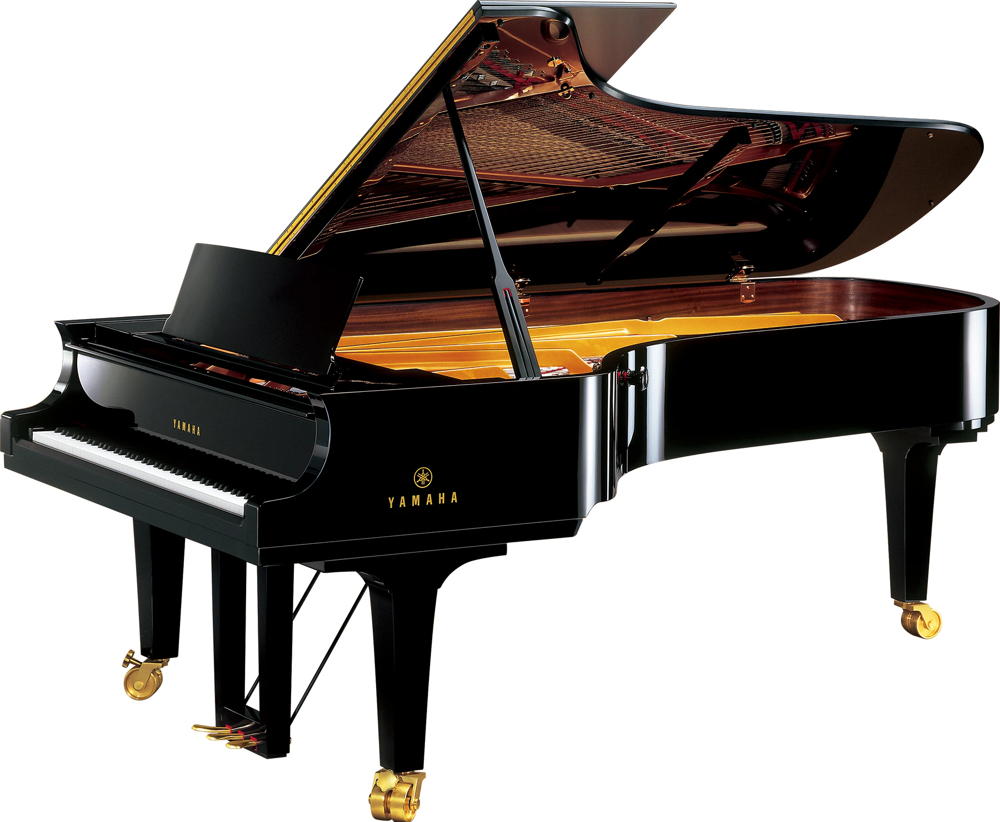
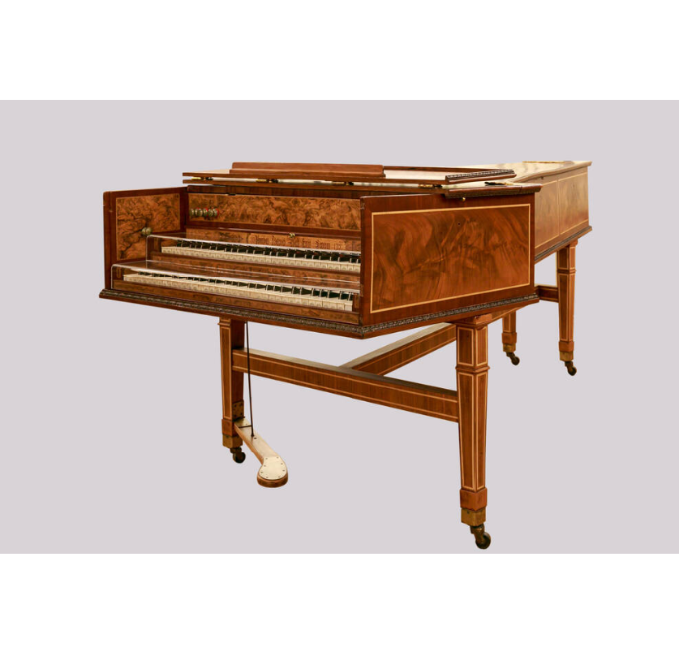
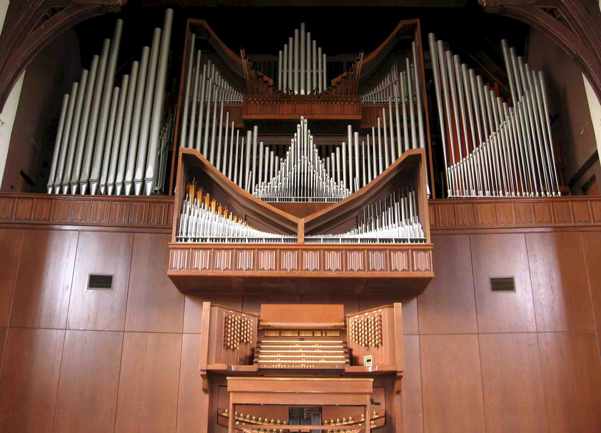
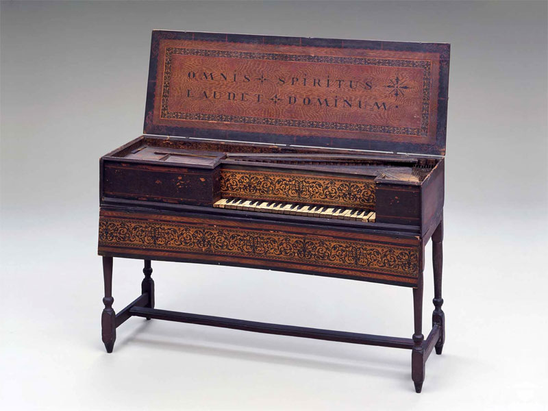

Фортепіано — клавішний інструмент, що створює звук ударами молоточків по струнах. Винайдене у XVIII столітті, широко використовується в класичній, джазовій та поп-музиці завдяки динамічному діапазону й виразності.

Фортепіано
Клавесин — струнний клавішний інструмент барокової епохи, де струни щипаються. Має яскраве, "щебетливе" звучання. Часто застосовується в старовинній музиці до фортепіанного періоду.

Клавесин

Орган — великий клавішний інструмент із трубами, який використовує повітря для створення звуку. Його масштабне звучання домінує в церковній та концертній музиці. Має кілька клавіатур і педалі.
Орган
Клавікорд — компактний клавішний інструмент, у якому струни вдаряються латунними пластинами. Має тихе, ніжне звучання і використовується переважно в камерній музиці.
